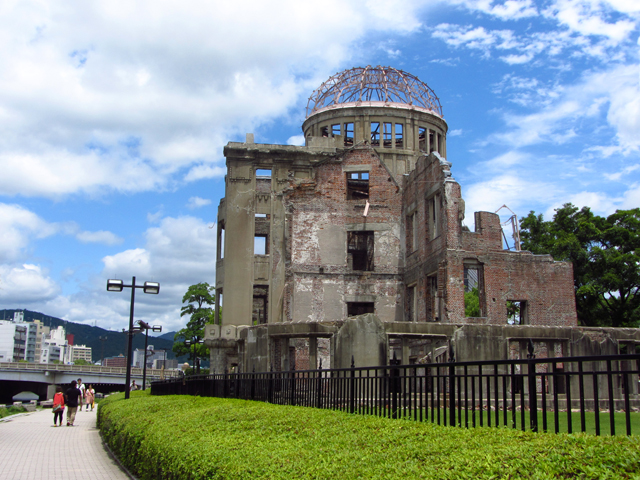
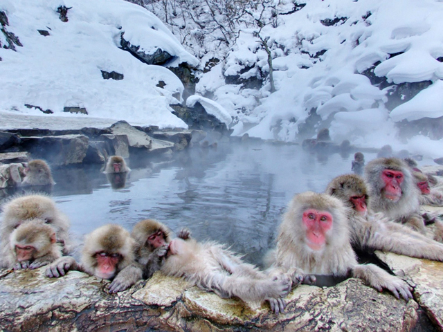
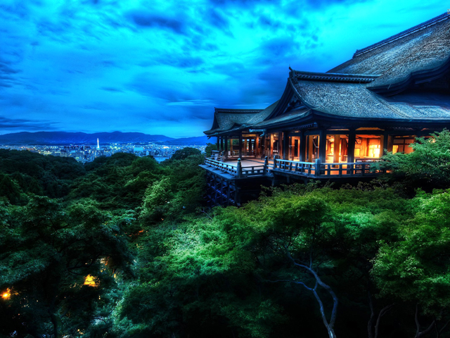
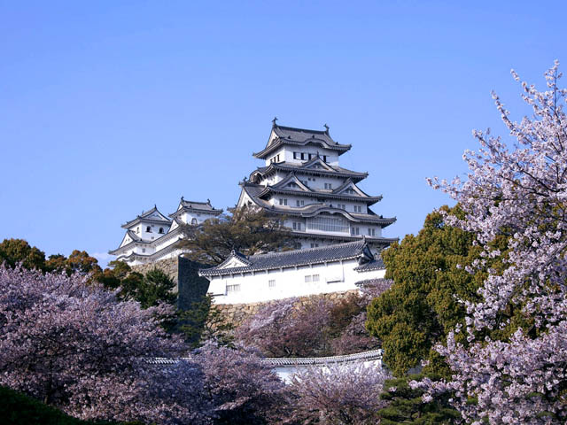
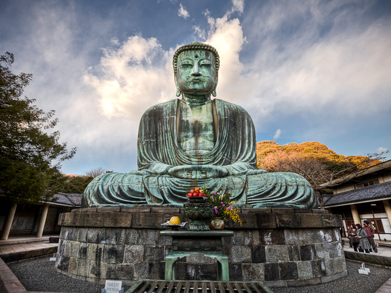
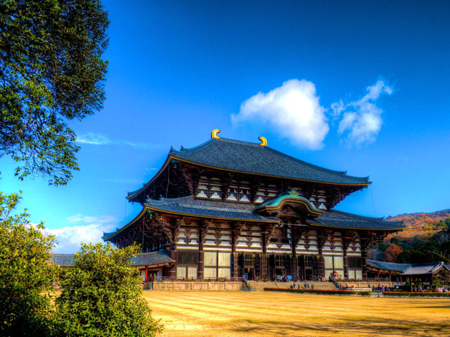
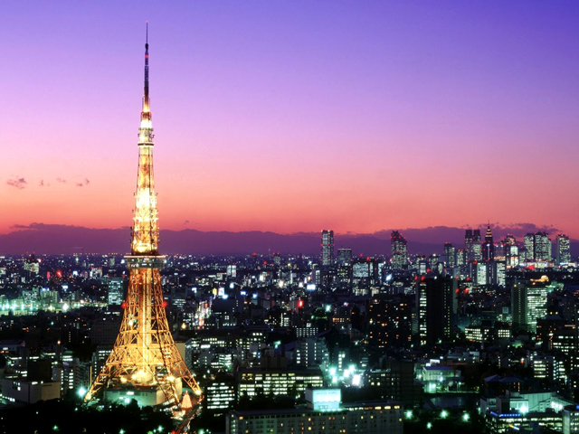
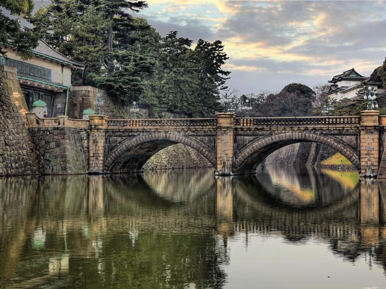
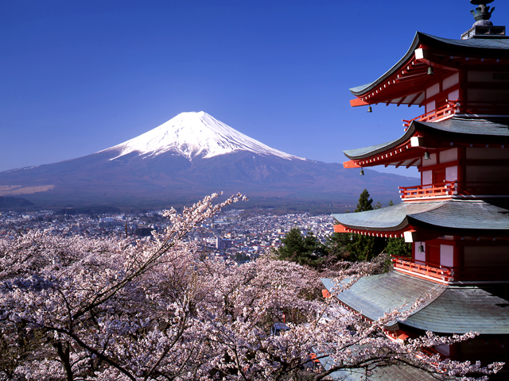
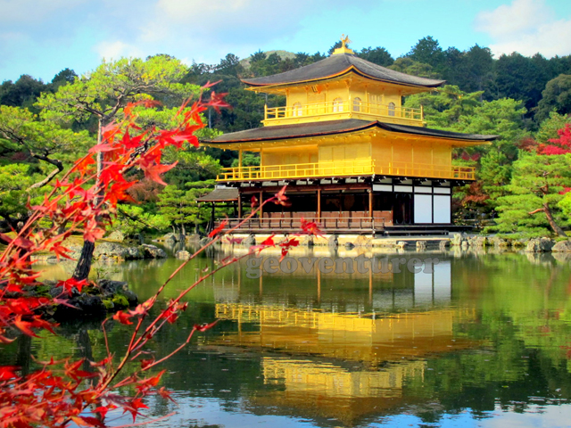

10 kihagyhatatlan hely Japánban
Japán az egyik legnépszerűbb turistacélpont a világon. A hagyomány és a modernség egyedülálló keveréke számos templommal és épülettel a múltból, melyek együtt léteznek az építészet és technológia modern vívmányaival. A látogatók egy nap alatt belemélyedhetnek a japán történelembe és kultúrába, illetve a következő napon már egy futó képet is kaphatnak a jövőről a technikai fejlesztésekből kiindulva. Majdnem az összes történelmi helyszínt az eredeti rendeltetésének megfelelően használják, és emellett a nagyközönség számára a kapuk nyitva állnak. Japán természeti szépségei egész évben gyönyörködtetik az arra járókat. Ezen kívül Japánnak van a legalacsonyabb bűnözési rátája, mely ideálissá teszi az országot a turistáknak. Íme, egy áttekintés Japán vezető turistalátványosságairól...
1. Hirosima Béke Emlékmű
A Hirosima Béke Emlékmű az 1945. augusztus 6-án ledobott atombomba áldozatainak állít emléket. A parkban álló emlékmű a Genbaku dómot mutatja be, az egyetlen épületet a környéken, mely a bomba ledobása után állva maradt. E kíméletlen emlék a háborúban lévő világról emlékezteti a látogatókat az emberi élet fontosságáról, az áldozatok becsületéről, így ők soha sem merülnek feledésbe.

2. A Jigokudani Majompark
A Jigokudani Majompark egy híres meleg vizű forrásban gazdag területen fekszik Nagano közelében. Jigokudani nevét („pokol völgye”) a meredek sziklákkal és rettentően hideg erdőkkel körülvett fagyos földből kibuborékoló forró víz és gőz miatt kapta. A hely híres a gazdag hómajom-populációjáról, mely egyedei a tél beálltával, mikor hó borítja a parkot, lemennek a völgybe. A meredek sziklákról és erdőkből másznak ide a majmok, hogy beleülhessenek a meleg forrásokba, este pedig visszavonulnak a biztonságot nyújtó erdőkbe.

3. Kiyomizu-dera
A buddhista Kiyomizu-dera templom Kiotó keleti részén áll, története egészen 798-ig vezethető vissza. A belső vízesés, melyet egy folyó táplál kívülről, harmóniában tartja a templomot a természettel, és megépítéséhez egy szöget sem használtak. Míg a helyiek a domb alatti mélység fölé épített teraszról ugrottak le, remélve, hogy kívánságuk valóra válik, ha túlélik a halálugrást (85,4 %-os túlélési aránnyal), addig ma a turisták a kiállított ereklyéket, talizmánokat és műalkotásokat tekinthetik meg anélkül, hogy kockára tennék végtagjaikat vagy akár életüket is.

4. Himeji kastély
A Himeji kastély a japán kastélyépítészet legjobb létező példája. Megerősítették, hogy védelemül szolgáljon az ellenség ellen a feudális rendszerben, de az elmúlt századok alatt sokszor újjáépítették, így a különböző korszakok stílusát mind tükrözi. Túlélte a második világháború bombázásait, valamint igen gyakran megjelenik a hazai és a külföldi filmekben, mint a Csak kétszer élsz című James Bond-filmben is. Fehér külseje, illetve kivitelezése egy repülő madárra emlékeztet, ezért szokták Fehér Kócsag Várnak is nevezni.

5. A kamakurai Nagy Buddha
A kamakurai Nagy Buddha egy hatalmas kültéri alkotás, mely Japán legnevesebb buddha alakját, Amida Buddhát reprezentálja. E bronzszobor 13 méter magas és közel 93 tonnát nyom. Állítólag 1252-ben állították fel. Habár eredetileg egy kis fatemplomban kapott helyet, ma már a szabadban található, hiszen az eredeti templomot elmosta egy cunami a XV. század folyamán.

6. Todaiji templom
A Todaiji templom Narában egy jelentős technikai vívmány. Nemcsak a világ legnagyobb faépülete, hanem ez ad helyet a világ legnagyobb bronzból készült Buddha-szobrának. E gyönyörű kertekkel és vadvilággal körülvett helyre központosult a buddhista Kegon iskola is, a terep pedig rengeteg műtárgyat rejt a japán és a buddhista történelemből. A területen a szarvasok mint a sinto istenek hírnökei, szabadon barangolhatnak.

7. A Tokiói torony
A Tokiói torony a technológia fejlődésének és a modern életnek a testamentuma. Felépítését az Eiffel torony ihlette, annál 11 méterrel magasabb. Ez a második legnagyobb emberi építmény Japánban, kommunikációs és megfigyelő toronyként működik. A turisták felmászhatnak a toronyba azon páratlan kilátásért, mely Tokióra és a környező vidékekre nyílik, valamint elmehetnek vásárolni vagy éppen beülhetnek egy étterembe.

8. Tokiói Császári Palota
Japán császárai a Tokiói Császári Palotában rendezik be otthonukat. Ez még adminisztrációs központként illetve a japán művészetet és történelmet bemutató múzeumként is funkcionál. A palota régebbi kastélyok romjain áll, melyeket tűz vagy háború rombolt le, és az építészek azzal tisztelték meg a múltat, hogy különböző korok formatervezését keverték bele a modern palotába. Az új palotát tradicionális japán kertek övezik, valamint sok recepciós és hivatalos iroda található benne, hogy fogadhassák a vendégeket.

9. Fuji
Fuji Japán legmagasabb hegycsúcsa, tengerszinttől számítva 3776 méter magasra emelkedik. A vulkán kivételesen szimmetrikus kürtője Japán jól ismert jelképe, és nagyon gyakran ábrázolják a művészetekben illetve fényképeken, emellett népszerű turistalátványosság mind a városnézők, mind a hegymászók körében. Becslések szerint évente kétszázezer ember mássza meg a Fujit, ezek 30%-a külföldi. A felvezető út három és nyolc óra közti időtartamot vehet igénybe, a lejtmenet kettő-négy órán át tarthat.

10. Arany Pavilon
A Kinkaku-ji vagy az Arany Pavilon Japán és Kiotó legnépszerűbb turistalátványossága. A pavilon eredetileg Ashikaga Yoshimitsu sógun villája volt a XIV. század végén. Sajnos a pavilont leégette 1950-ben egy fiatal szerzetes, aki ennek megszállottja volt. Öt évvel később a templomot az eredeti tökéletes másaként újjáépítették. A pavilon aranybevonatot kapott, mely kiemeli a tóban való tükröződését, illetve a tó tükörképét az épületen.

Forrás:http://hellovilag.hu/2014/marcius/japan-nevezetessegei.html